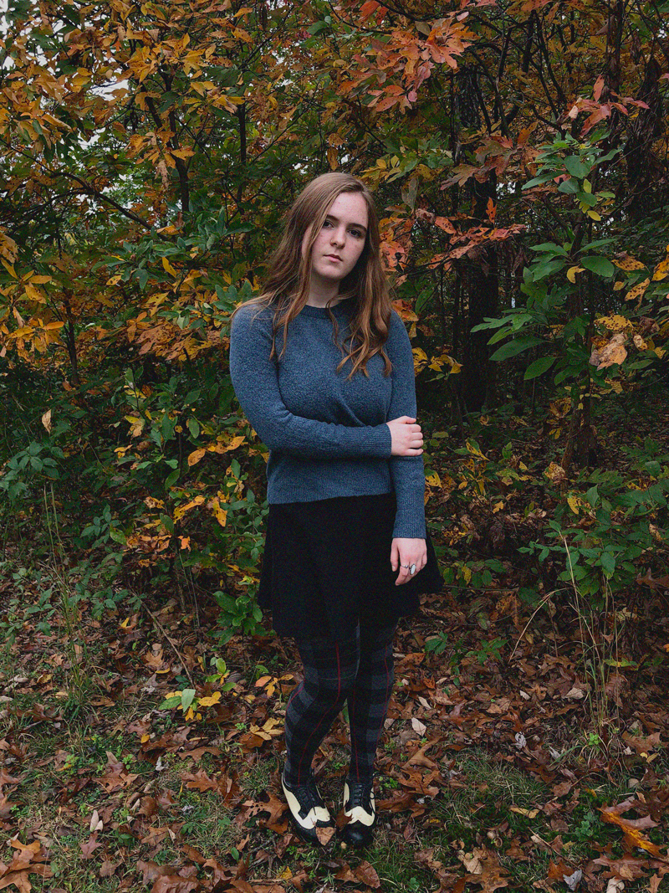
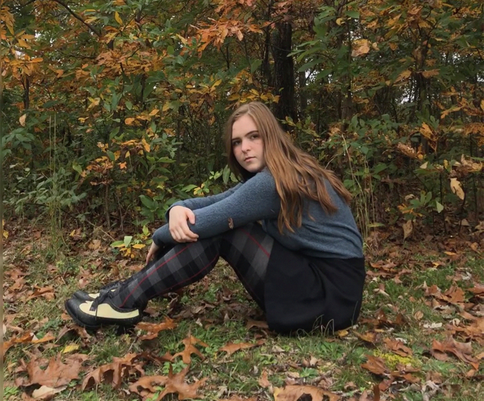
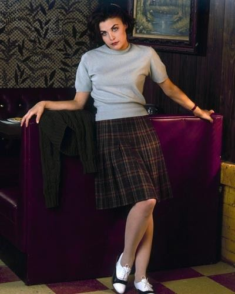
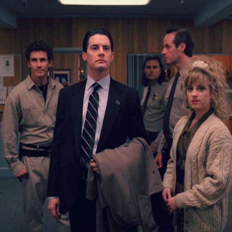
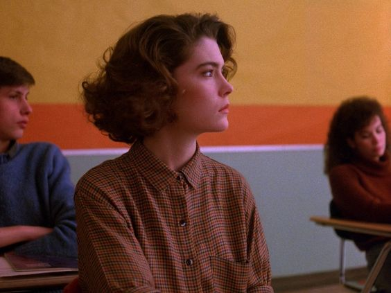
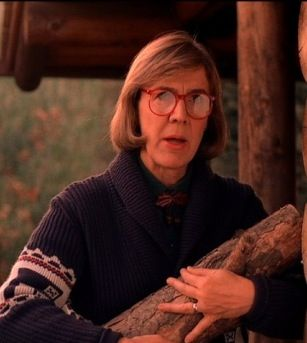
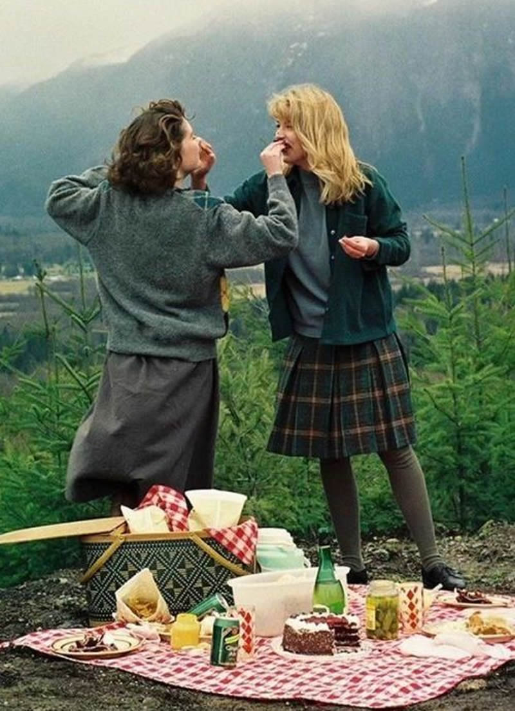

Who killed Laura Palmer?
 Not to fit too well into the role of the indie art-school girl who collects vintage clothes, but I really love the aesthetics of Twin Peaks. This time of year, as the leaves start to change and fall, the scenery around me emulates the color palette of this moody show. I revisted some clips and images from it, and felt obligated to come up with a Twin Peaks inspired outfit. Anyway, here are some of my favorite looks from the show.
    I was dissapointed to find that I don't have any pleated plaid skirts!